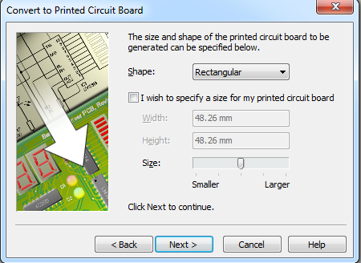
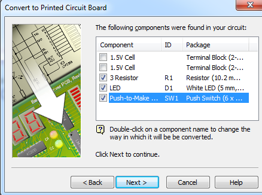
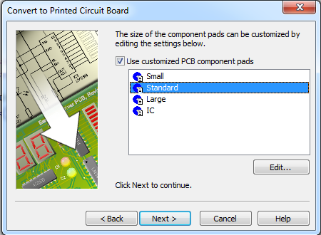
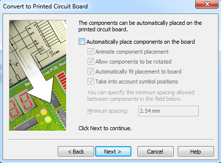
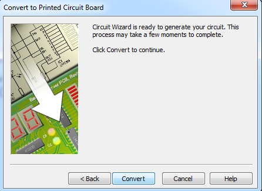

The LED Torch - Circuit Design
1 Using Circuit Wizard
Learn It
- We're now going to deign our LED Torch.
- The first thing we'll need to do is design a circuit and a PCB. To do this we use a program called Circuit Wizard.
Design It
- Find the Circuit Wizard application and open it.
- Click on File in the menu bar and then New from the context menu.
- Choose
Circuit with GENIE Flowchartfrom the dialogue box and click OK.

- On the far right of the screen you'll see a gallery of components you can use.

- Choose
Power Suppliesand then find the symbol for aCell

- Drag a single Cell onto the page, and then another one.
- You should arrange them so that they are connected together.

- When we connect up cells in this way, we are making a battery. Our LED Torch will be powered by 2 1.5V Cells, giving us a total Voltage of 3V.
- Next we need an LED. In the Gallery, find the Light Emitting Diodes.

- Drag an LED onto your page and rotate.

- Now we need to connect up the LED to the cells.
- You can do this by clicking and dragging on the end points of the LED, to create a wire.

Try It
- It's up to you to finish the circuit now.
- You'll need to put in a
Push To Makeswitch and a resistor, and then connect it back up to the cells. - It should look like this when you are finished.

- You'll need to change the resistor value to 3Ω. To do this, double click on the resistor to reveal it's properties. Make sure it's not 3kΩ
Run It
- Let's try out our circuit.
- In the tool bar at the top of the screen is a play button.

- Click the button and then test out your circuit by pushing the switch.
- Now let's make it more realistic.
- From the menu choose Project –> Simulation and turn on explosions.
- Now run your circuit and see what happens.
2 Assessment
Badge It - Silver
- In your own words, explain what happened when you simulated the circuit.
- Describe how you could make sure this doesn't happen.
3 Using Circuit Wizard
Learn It
- Different LEDs can take larger currents than others.
- Change your resistor back to 3Ω if you altered it, and double click the LED and change it to a
WhiteLED. - Now simulate the circuit and you should see that everything works as expected.
4 Preparing to design a PCB
Learn It
- A PCB is a Printed Circuit Board. This is a laminate material with copper printed on the surface. Because the copper parts are metal they allow electric current to flow through them.
- The PCB you'll be using in your LED Torch looks like this


- Let's use Circuit Wizard to design the PCB
- Click on the icon shown in the toolbar to start the PCB wizard.

- Click on Next

- Choose the option
Single-Sided; Thin Tacksand don't forget to check the tick box at the bottom, so we can customise the layout

- We now get to choose the size of the board, but we can edit this later so let's simply click on
Next

- On the next screen we can customise the types of components we get to use.

- Uncheck the Terminal Blocks and then double click on the switch and choose the
6x6 Push to make switchfrom the options provided. Then you can clickNext

- Next you can choose the types of copper pads you want to use by default. We're best off going for Standard sized pads, to help use keep our soldering neat.

- The next screen allows us to decide if we want Circuit Wizard to place components for us. This can be useful sometimes, but most of the time, it won't do as nice a job as a human can. Uncheck the box and click
Next.

-The last screen prompts us to Convert our circuit, so go ahead and click it.

5 Designing a PCB
Design It
- Your PCB should look something like this.

- Place your components on the board, so it looks something like this.

- Now we need to place some pads on the board, so that we can connect up our cells.
- Select the pad icon from the toolbar.

- Place pad close to the bottom of the switch as shown below.

- Now we'll need to connect up our components. Choose the tracks icon from the toolbar.

- Now draw on the tracks as shown below.

- The PCB would work as it is, but we're going to make a few modifications to help us out when it comes to soldering and assembling the torch.
- Firstly we're going to add in a second resistor. This won't have any current flowing through it, but it will help to keep our board flat when it is in the case.
- Find the resistors from the component menu and place it to the right of the switch.

- We can finish off by adding a few extra tracks in. These help make sure that our pads are secured to the surface of the PCB and are less likely to lift off when we solder them.
- Lastly we can re-size out board, so that we don't waste material.

6 Assessment
Badge It - Gold
- The design of the digital torch PCB is by no means the absolute correct way of laying out the components.
- See if you can come up with your own design for the PCB.
- The smaller you can make the board, the happier your budget will be.